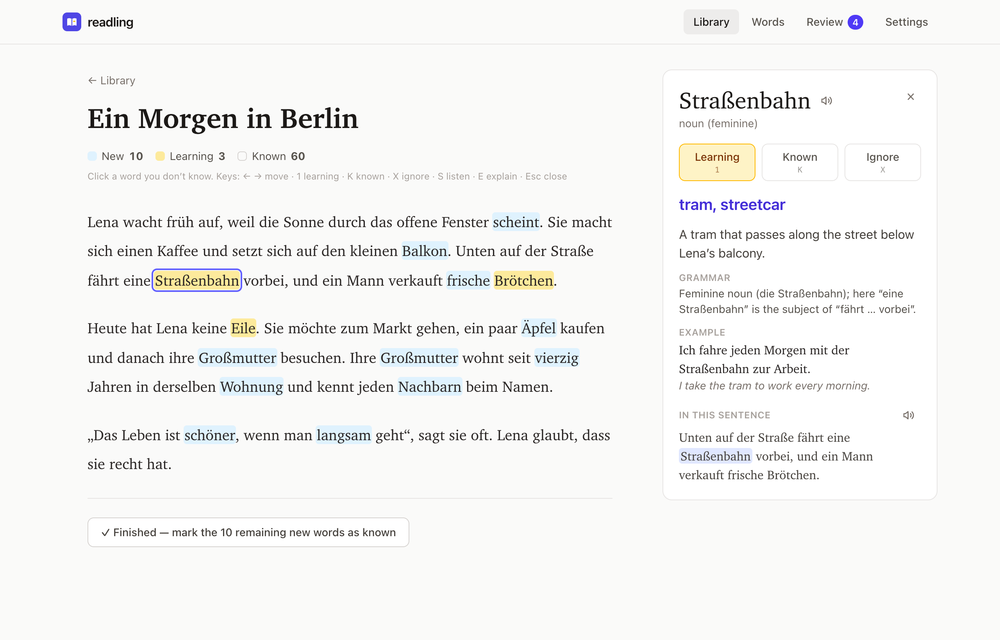

Web · Dil öğrenme
Readling
Okuma, kelime öğrenme ve aralıklı tekrarı aynı akışta buluşturan açık kaynak dil öğrenme uygulaması.
Teknik notlar
- Metin, EPUB ve PDF üzerinde kelime ve ifade takibi; cümle bağlamında AI açıklamaları.
- Tarayıcıda saklanan kitaplık ve kişisel kelime geçmişi; FSRS tabanlı tekrar ve testler.
- Cihaz üzerinde AI veya kullanıcının seçtiği sağlayıcı; temel okuma ve pratik için hesap gerektirmeyen yapı.